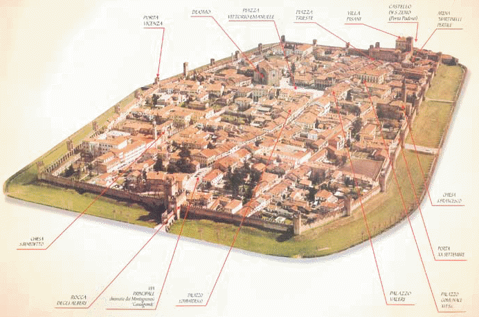
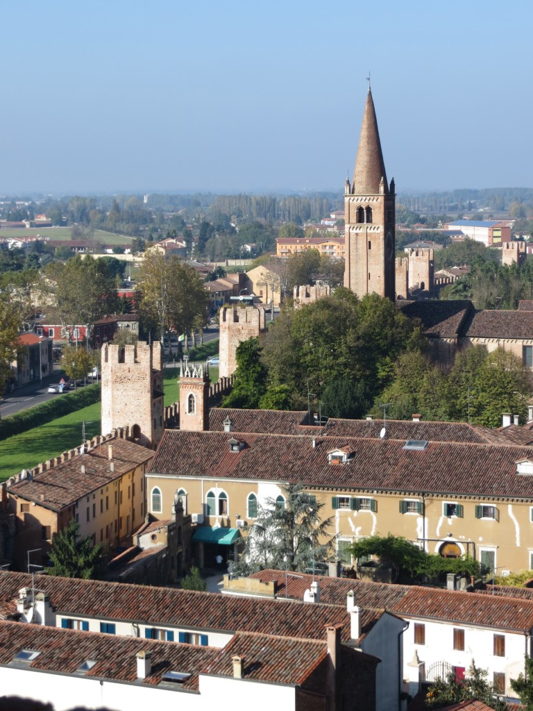
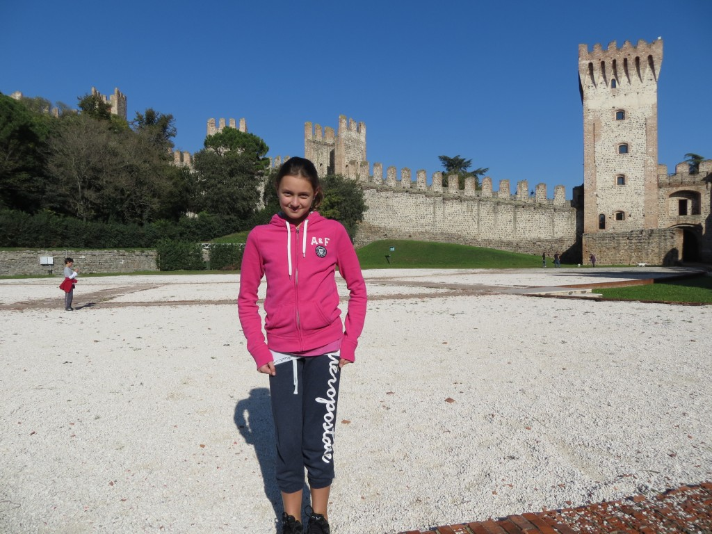
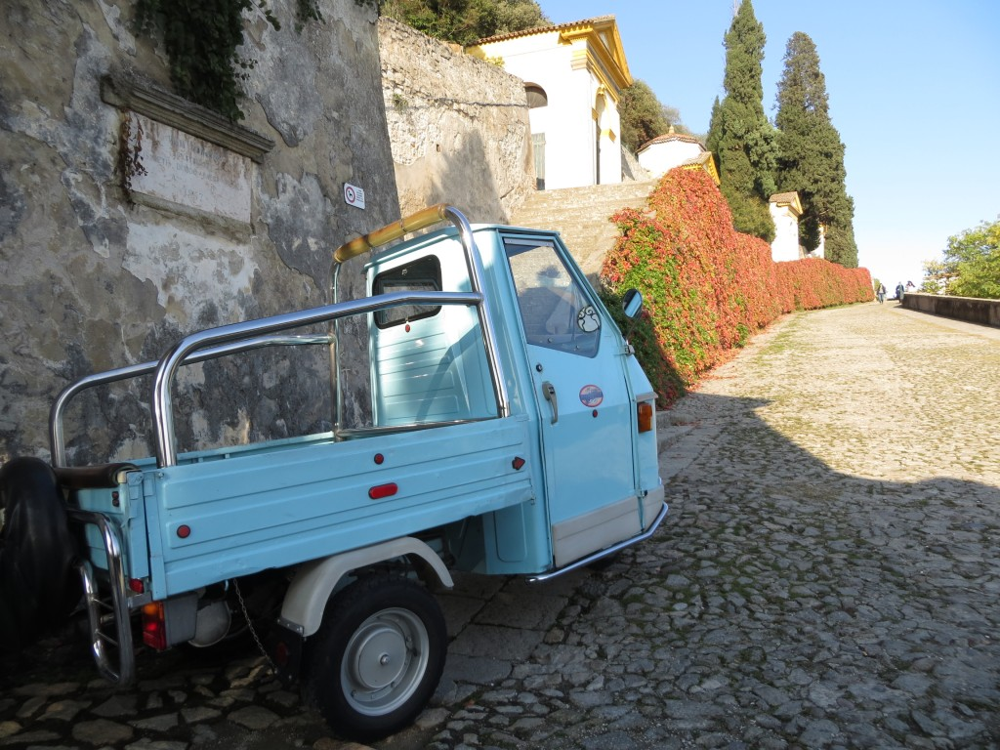
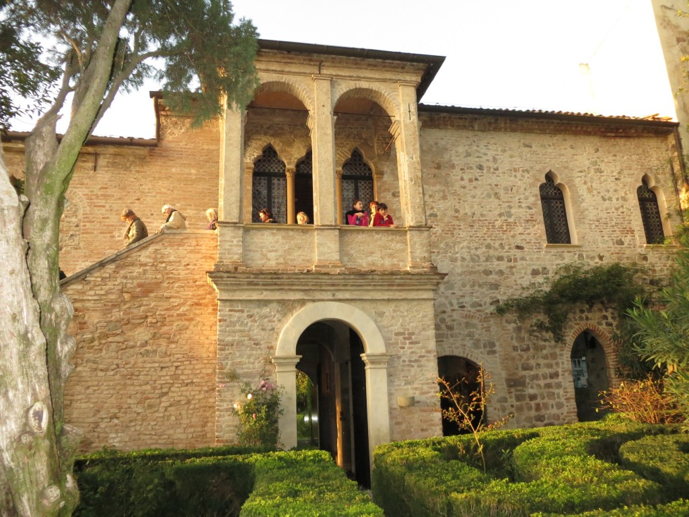
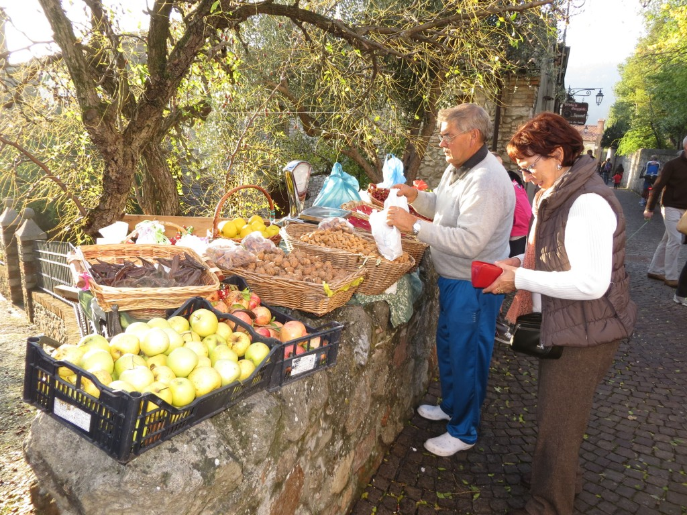
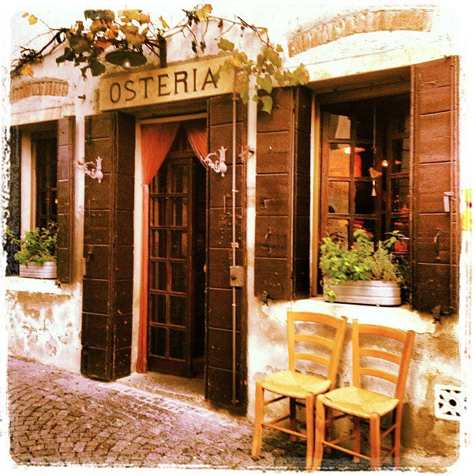

Image via temalibero.it We walked up to the top of the Ezzelino tower (top, right, in the image above), from where we could enjoy the view of the town and the surrounding landscape.
Montagnana has the "inevitable" main piazza with its beautiful cathedral and arcades that skirt the streets. Houses no higher than two stories populate the town, which is truly a small jewel. After a brief stop in a grocery shop where we got our sack lunch (I mean, a gourmet sack lunch...), we continued our field trip toward Este. Este's main attraction is what's left of the Castello Carrarese (built in the XIV century), whose walls are today the perimeter of a very nice park.
Monselice was our third destination that day. We arrived there in the early afternoon and were greeted by a festive mercatino (a local fair), which was filling the streets. We decided to climb the small hill leading to the Villa Duodo, which ends a devotional way skirted by seven tiny churches.
Our last stop was Arqua' Petrarca, the town where the famous Italian poet Francesco Petrarca died in 1374.
This is his house. And below you can see a local man selling, and my Mom buying, chestnuts, walnuts, apples, jujubes (which are typical of this area), and other fruits of the season right off his house, on the street.
Arqua' Petrarca is a well preserved medieval village that embraces a small hill, with cute streets going up and down and characteristic places like this osteria (tavern):
And with Arqua' Petrarca our field trip ended. Visiting these small towns was a revelation: seeing beautiful places off the beaten path has been a pleasant surprise also for natives like us. Besides, driving in Veneto is quite easy (unless you are in the outskirts of a bigger city), so consider it for the next time you are planning a trip to Italy. It really pays off.